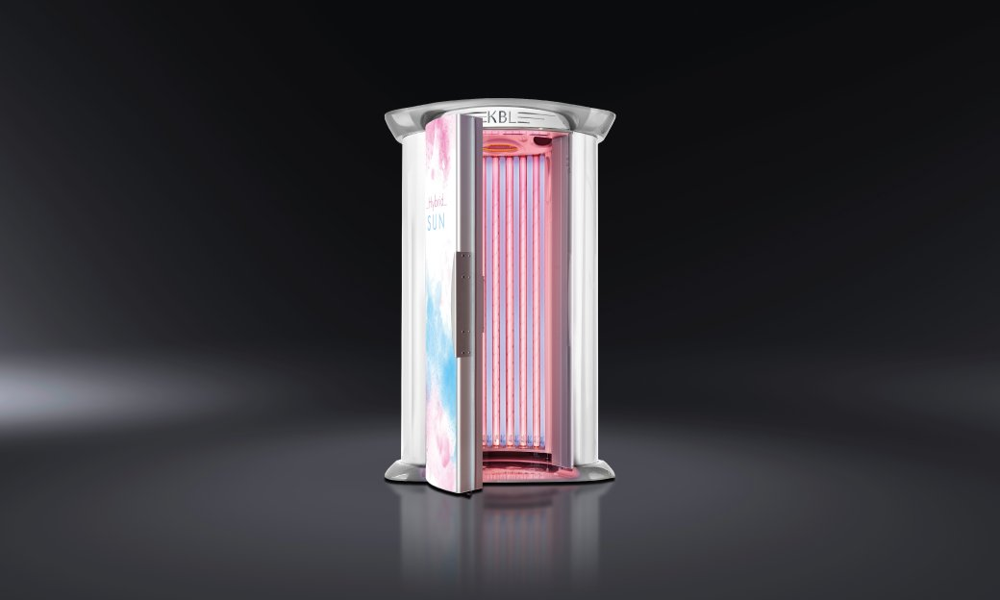

Four Seasons Tanning Salon
Advanced Tanning Systems in a Cool, Clean & Relaxing Atmosphere
About
Four Seasons Tanning Salon is the premier tanning salon in the North Florida area.
Locally owned and operated by Paul Abdullah for over 29-years, Four Seasons has continued to expand and grow as the tanning industry develops new technology. Combined with our friendly and professional staff, our goal is to provide a refreshingly positive tanning experience and change the way people view tanning. There is something for everyone at Four Seasons Tanning Salons. We offer 5 different types of tanning equipment to give our customers a choice based on performance or price. If you are looking for the latest in tanning equipment or our newest Mystic Kyss spray-on tanning system, come to the #1 place for tanning in Jacksonville, Four Seasons Tanning.
New Customer CouponPackages
We offer several different types of tanning packages to suit your needs.
Feel free to call us to discuss what package is best for you. We recommend the use of a salon quality tanning lotion to achieve the best results in our tanning equipment. Samples of all products are available for purchase.
VIP Packages are the Best Value! No Contracts or Enrollment Fee's!
All VIP Members receive 25% off all lotions
Platinum VIP Package
Includes All High Performance Equipment
$94.95 per month
*Add on red light therapy for $99 a month
Silver VIP Package
Includes KBL Hybrid Tower, KBL 5600, plus Gold and Bronze beds
$74.95 per month
Gold VIP Package
Elixer 36 & Bronze Beds
$44.95 per month
Mystic VIP
Mystic Kyss
$84.95 per month
Red Light VIP
SST-28 bed
$159.95 per month
Our Unlimited Packages for use in the Level 1 and Level 2 beds, as well as the Platinum Membership include all High Performance beds plus the Mystic Kyss. We offer upgrades from any package to use any High Performance beds or Mystic Kyss
Unlimited Packages
| Gold | Silver | Platinum | Platinum 2 (Mystic) | |
|---|---|---|---|---|
| 1 Week | $34.95 | - | - | - |
| 1 Month | $69.95 | $84.95 | $114.95 | $99.95 |
| 1 Year | $325.00 | $700.00 | $750.00 | $700.00 |
Upgrades
| KBL 8000 | $15 |
| KBL Tower/5600 | $10 |
| SST-28 | $30 |
| Mystic Tan | $15 |
Star Packages - No Expiration Dates!
These are credits that can be purchased to be use in any of our tanning equipment. They have no expiration, so the more you buy at one time, the bigger the savings! This is sometimes better for the customer who tans in a more powerful tanning system or someone who doesn't come in as often, but wants to save from buying single sessions.
Star Packages
| Star 5 | $39.95 |
| Star 10 | $59.95 |
| Star 20 | $109.95 |
| Star 30 | $144.99 |
| Star 50 | $224.95 |
| Star 100 | $399.95 |
| Star 200 | $699.95 |
Stars Used Per Session
| KBL 8000 | 5 Stars |
| KBL Tower/5600 | 3 Stars |
| Elixir 36 | 2 Stars |
| SST-28 | 6 Stars |
| Mystic Tan Kyss | 5 Stars |
Single Sessions
| KBL 8000 | $35 |
| KBL Tower | $25 |
| KBL 5600 | $25 |
| Elixir 36 | $15 |
| SST-28 | 1 session - $50 |
| 3 sessions - $99 | |
| 10 sessions - $199 |
Elixer 36
| * 60 Minutes | $45 |
* These minutes can be used in increments so you can tan at a slower pace for your body's skin type. Recommended for beginner tanners!!
Equipment
-
KBL 8000
The Intelligent Control System allows the customization of your individual tan. It imitates natural sunlight with all its effects on body and mind. Seventy HyperRed BeautyBoosters soothe the skin and create a natural looking tan. Features Air conditioning, Aqua cool, Aroma, Bluetooth and built in sound system
-
KBL Tower Hybrid Sun
Elegant, comfortable and fascinating, the space 2000 convinces with high-quality materials and its attractive lighting. Perfect equipment and the invisibly integrated exhaust system for low-noise, relaxed tanning.
 -
KBL 5600
The KLB 5600 offers everything you would expect from a high-class unit — great variety at an attractive price. The front section with its dynamic LED borders including ColorMotion looks full of energy, fascinating and adapts perfectly to any studio atmosphere.
-
Elixir 36
This 15 minute system is as large as the more expensive systems, but with all the bells and whistles. It has three adjustable facials to give you the boost you want!
Spray Tanningg
Mystic Kyss is the most recognized spray tan system around and out shines all the other systems. With the Mystic Kyss, you can choose the color of the mist every time you spray, so you can get the perfect tan you always wanted, and the "Heated Drying" session will dry the mist on your body preventing any runs or drips, allowing you to dress and go on about your day, looking like you just got back from an island vacation!
Mystic Tan Kyss
| 1 Session | $35 |
| 3 Sessions | $95 |
| 5 Sessions | $125 |
Spray Tan Tips
-
Q: Will my skin look orange?
A: No. The advanced technology currently used in sunless tanning solutions is designed to ensure a natural, bronze tan. The salon staffer can help you select the proper level of tanning solution to best match your skin tone.
-
Q: What is Sunless Spray Tanning?
A: Sunless spray tanning is the spray/mist application of Sunless tanning solution to your body. When applied, DHA (the active ingredient in Sunless tanning solution) reacts with the proteins in the skin’s superficial layer to form a golden brown color. Your skin begins to darken two to three hours after application and reaches its peak color within 24 hours. The color will gradually fade through natural exfoliation, just like a tan from the sun.
-
Q: How should I prepare for my Sunless Spray Tanning Session?
A: Exfoliate and shave the day before or the day of the sunless spray tanning session (day before is preferred). The day of the Sunless spray tanning session refrain from using moisturizers, perfumes, lotions, oils or deodorants that may create a barrier between the skin and the Sunless tanning solution. You may resume using these after your first shower or bath.
-
Q: How long should I wait after a session before showering?
A: To give the DHA enough time to fully set, it is recommended to wait a minimum of 4 hours after a sunless spray tanning session or 8 hours for optimal results. Showering sooner may diminish the intensity of the tan. If you tan using an Instant Cosmetic Bronzer, the Instant Cosmetic Color will wash off in the shower, but the color produced by the DHA will remain.
-
Q: What is the Sunless Spray Tan (FDA) advisory?
A: The FDA advises that users avoid inhaling or ingesting DHA or letting the spray get into the eyes. When using DHA-containing products as an all-over spray or mist, it may be difficult to avoid exposure in a manner for which DHA is not approved, including the area of the eyes, lips, or mucous membrane, or internally.
The FDA recommends protective measures to eliminate eye contact, inhalation or ingestion during a spray tan session, such as:
- Eye protection
- Nose filters
- Ear plugs
- Lip balm
- Undergarments
For additional questions or concerns regarding DHA, consult a healthcare professional
To understand the complete FDA position on DHA, visit the FDA website
Frequently Asked Questions
-
Q. What is the age requirement to tan?
A. You must be 18 years or older to tan without parental consent. Ages 13-17 may tan with proper parental consent. UV Free Treatments are available without parental consent.
-
Q. Do I need and appointment to tan?
A. No, appointments are not required, walk-ins are welcome.
-
Q. I burn easily, but I do tan, will I burn in the tanning bed?
A. Not sunburning is a number one priority at Four Seasons Tanning. Every client is given an evaluation to determine the amount of time to be spent in the tanning unit, to be increased as you go on. Tanning is your skin’s natural defense mechanism against burning. Burning can lead to premature aging, drying, wrinkles and other health problems and should be avoided.
-
Q. Can I tan if I am pregnant?
A. There are medical reports to debate this question. Sun rays, including those in tanning units do not penetrate deeper than a fingernail, however some clients or their doctors do not feel it to be “safe” during pregnancy. We will gladly freeze or extend your package to accommodate those expecting! We also offer the UV Free Treatments that are great for everyone, including those who are pregnant!
-
Q. Is eye protection required to tan?
A. YES! FDA regulations require all tanners to use federally approved eyewear while tanning indoors. Personal eyewear may be purchased at a nominal charge. If you ever tan at a salon that doesn’t provide eyewear, or require you to purchase eyewear prior to tanning, you should find a salon that follows federal laws and cares enough about their clients eyes to insure that all the proper precautions are taken.
-
Q. Can I tan in the tanning beds and have UV Free Treatments done?
A. YES! Most of the tanning lotions made today contain DHA, which is the active ingredient in the UV Free solution. Having a UV Free Treatment done and then using the tanning bed will yield excellent results because the UV Free Treatment will get the DHA solution evenly over your entire body, (extremely hard to do this by yourself) and will definitely take your tan to a level it has never been before!
-
Q. My torso gets really dark, but my legs, arms and face are not tanning as well, what should I do?
A. There are 3 main “ingredients” to get tan- sun, oxygen and blood. Since there is a greater concentration of blood in your torso and less in the outer extremities, it is harder to get color in these places of the body. We recommend using a tingle lotion which is designed to bring blood to the surface of the skin to increase micro circulation. However, a tingle lotion is not for everyone, in which case, we do offer UV Free Treatments for face and neck, and legs only. Packages are available.
-
Q. Why can’t I use an outdoor lotion in the tanning bed?
A. Outdoor lotions contain certain oils, etc. that can break down and crack the acrylic on the tanning beds causing the transparency to be compromised and lessen results. Indoor tanning lotions are the only lotions that may be used in our tanning units.
-
Q. What are the beds cleaned with to insure proper sanitization? Do I have to clean my bed after I tan?
A. Beds are cleaned with an FDA approved cleaning solution to insure sanitization between each client. Cleanliness is very important to us. We are meticulous about keeping the beds clean for our clients. Each bed is cleaned by our professionally trained staff after each client.
-
Q. I am trying to get tan for a vacation, wedding, formal, etc. How much time prior to my even do I need to start tanning to make sure that I have a good tan?
A. Everyone skin tans at a different rate. We recommend coming in at least one month prior to be evaluated to determine how much time will be needed to get you the results that you want. Remember, we also offer the UV Free Treatments, which are great if you are not a year round tanner, and only need to be dark for this specific event.
-
Q. Do I need a tanning lotion?
A. Using a tanning lotion will help your skin prepare for an intense amount of sunlight in a relatively short amount of time. We carry lotions with bronzers, self acting bronzers, tingle, cooling, and hypo-allergenic- ask our expert staff which will be best for you.
Locations
Beach & Hodges Location
13529 Beach Blvd.
(Hodges & Beach Blvd)
904-821-8267
Hours
- Mon-Thur 10-8
- Fri 10-7
- Sat 10-6
- Sun 12-5